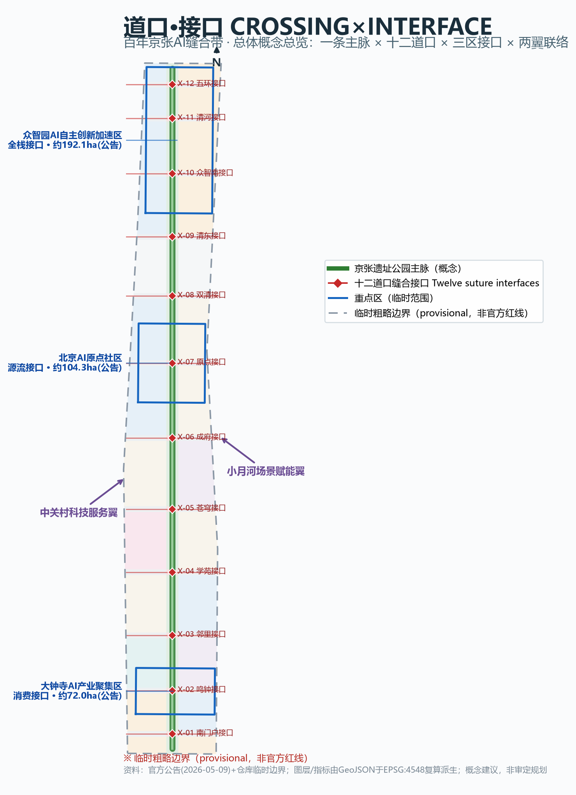
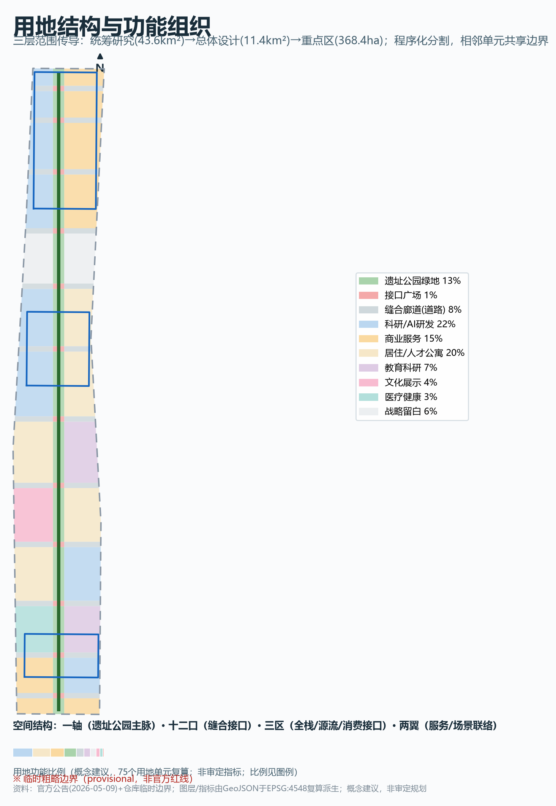
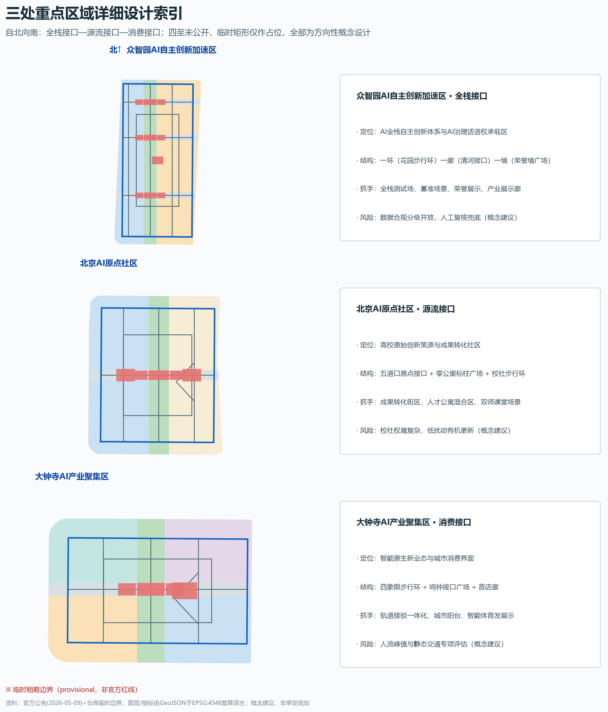
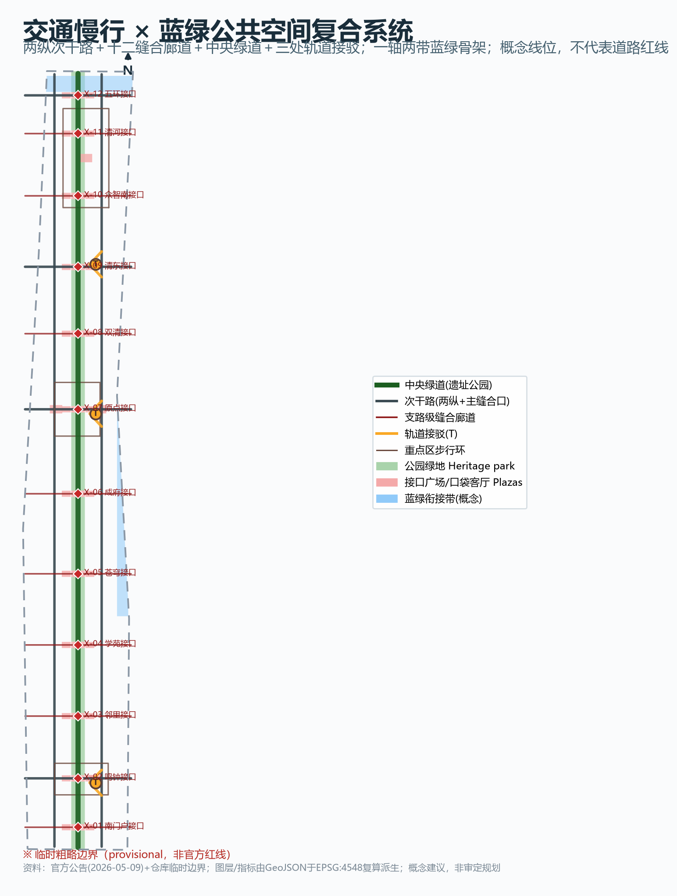
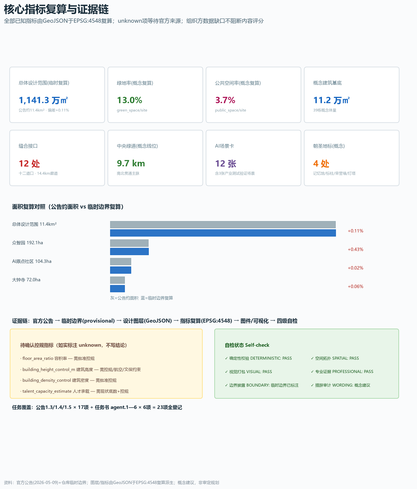

道口·接口 CROSSING×INTERFACE：百年京张AI缝合带城市设计方案
以'道口→接口'为总体概念，把百年京张铁路缝合城市的空间智慧转译为AI时代的城市接口系统：一条遗址公园主脉、十二个东西缝合道口、三区接口、两翼联络，配套12张AI场景卡、6类用户画像、4处AI朝圣地标概念节点与近中远三期实施框架。全部空间建议均为概念建议，基于临时粗略边界生成并可整链重算。
道口·接口 CROSSING×INTERFACE：百年京张AI缝合带城市设计方案
> 一百年前，京张铁路用道口把被轨道分开的城市重新缝在一起——五道口、四道口，这些地名就是缝合留下的城市记忆。一百年后，本方案提出：把百年道口，变成AI时代的城市接口。所有空间落地建议均为概念建议、参考方案，可供专业团队深化研究，不构成政府审定结论。
设计依据与资料清单
本方案的资料纪律先于设计判断：哪些资料能支撑 formal 结论、哪些只能做背景、哪些只是临时线索，直接决定每一章证据的写法。资料可用性以公共来源注册表为准 来源，任务与范围的主控依据是官方公告与面向智能体任务书 来源来源。
作为 formal 任务依据使用的资料包括：官方公告的项目名称、三层范围名称与面积、文字四至、设计任务与成果语境；面向智能体任务书的十条共创原则、六项必答任务与统一边界条款；住建部与自然资源部专业标准的官方公开文本快照 来源。作为临时生成依据使用的是仓库维护者推定的临时粗略边界，它依据公告文字四至与约面积推定并经 EPSG:4548 校核，只能用于 AI 生成、展示与临时自检 来源来源。作为背景层使用的是"三区两翼"公开叙事与产业背景 来源。处理资料包用于建立任务清单与缺数清单，不新增权威结论 来源来源。
当前的关键资料缺口是：官方精确红线、三处重点区四至、控规指标（容积率、建筑高度、建筑密度、绿地率、退线）、道路红线、权属、市政管线与现状建筑底数均未公开发布。本方案的对策是三层分离——几何层全部使用临时边界并醒目标注，指标层把控规指标如实登记为 unknown 并给出公式与所需来源，叙述层把一切空间落地写成概念建议。官方边界发布后，用地、建筑、绿地、公共空间、道路、分期图层与全部面积指标须按替换规则整链重算 深度。

三层范围工作框架
三层范围按"战略研究—总体设计—详细设计"逐级传导，面积与边界状态逐项登记 深度。
统筹研究范围约43.6平方公里，对应海淀"三区两翼"所在区域，承担产业战略、未来城市形态与区域协同研究，本方案以临时研究边界做统筹分析 空间数据指标。总体设计范围约11.4平方公里，是京张遗址公园周边1—2公里的城市地区与产业区，承担控规深度的城市设计，是本方案空间图层与指标复算的主战场 空间数据指标。重点区域范围约368.4公顷，自北向南为众智园AI自主创新加速区（约192.1公顷）、北京AI原点社区（约104.3公顷）、大钟寺AI产业聚集区（约72.0公顷），承担规划综合实施方案深度的详细设计 空间数据指标。
必须声明：三层范围目前只有临时粗略边界（provisional）。它由维护者依据公告文字四至与约面积推定，EPSG:4548 复算偏差在0.02%—0.43%之间，可用于生成、展示与临时自检，但不得作为官方红线、审批依据或精确面积依据。替换官方边界后需要重算的对象包括：用地分割、建筑基底、绿地与公共空间、道路长度、分期范围、全部面积与比例指标、五张核心图与离线可视化。

统筹研究范围产业与未来城市研究
**总体概念：道口·接口（CROSSING×INTERFACE）。** 京张铁路的物质遗产不只是轨道与站房，还有一整套"让被切断的城市重新相遇"的道口设施；而 AI 时代的城市基础设施同样需要在系统与人之间建立可理解、可协商、可暂停、可通行的接口。道口的运行逻辑——提前告知、栏杆落下、双向确认、顺序通行、恢复开放——恰好是 AI 进入城市时应有的治理语法。由此提出一带命名方案：中文主名称"道口·接口——百年京张AI缝合带"，英文名称 "JINGZHANG CROSSINGS — The Interface Belt"，口号"把百年道口，变成AI时代的城市接口"。命名体系按"主脉—道口—接口"三级展开：主脉为京张遗址公园活力带；十二个缝合节点恢复历史道口序列命名（首义道口、四道口、五道口……）；每个道口下的 AI 服务统称"接口"，如慢行接口、健康接口、政务接口。该命名不是口号式拼贴：它同时回应三大定位——百年京张文化带（道口是真实的遗产地名）、都市AI生活体验带（接口是可体验的服务触点）、AI融合创新带（接口是产业测试与开放的载体）来源。
**Logo 与视觉识别方向。** 以铁路道口的国际通用"X"形警示标（crossbuck）与汉字"口"为双母题：两条轨道线交叉形成一个菱形节点，负形构成"口"字，交叉点即"接口"。标准色取"铁轨青灰+信号灯红+枕木暖木色"，辅助图形为由枕木间距演化的等距点阵，寓意"每一次缝合都有据可查"。视觉识别只提供方向与母题，未经授权不使用任何现有商标、字体与人物形象，最终设计由专业团队深化 标准。
**三区两翼协同回路。** 三大定位统领五大功能在"三区两翼"的空间落位：众智园承担"AI全栈自主创新体系"与"AI治理全球话语权"，是全栈接口；北京AI原点社区承担"世界级AI创新生态"，是高校原始创新与产业转化之间的源流接口；大钟寺承担"智能原生新业态"，是智能经济与市民日常之间的消费接口；中关村科技服务翼承担要素全球化配置与资本赋能，小月河场景赋能翼承担场景开放与活力城市。协同回路的组织逻辑是"研发在众智园、转化在原点社区、应用在大钟寺、服务在两翼、展示在主脉"，十二个道口接口把这个回路缝合成日常可走的连续体验 来源。
**全球案例的机制转化（公开常识梳理，未编造任何企业名单与投资数据）。** 硅谷—斯坦福校企生态证明"大学接口"需要低门槛的成果转化空间与长期容忍失败的土壤；波士顿肯德尔广场证明混合功能与公共领域对创新密度的支撑；伦敦国王十字知识区证明铁路遗产更新可以成为城市级公共客厅；东京站八重洲再开发证明轨道站点一体化对街区价值的放大；新加坡纬壹科技城证明"工作—生活—学习"混合社区对人才的黏性；慕尼黑工厂区更新证明工业遗存的渐进活化路径；上海张江AI岛证明垂直领域测试场对产业集聚的牵引。七条经验在本方案中的转化方向分别是：源流接口的成果转化空间、原点社区的混合公共领域、遗址公园的遗产客厅化、三处轨道接驳接口、人才社区的全时配套、主脉的渐进更新、众智园的全栈测试场 来源指标。
**面向未来的城市形态判断。** AI 时代的城市空间组织应从"功能分区"走向"接口网络"：算力、数据、场景像当年的水电路一样成为市政级要素，城市需要的是可插拔、可审计、可退出的接口化空间——测试段可以关闭、场景可以回退、数据可以就地结算。这一判断落到用地上的表达是：以遗址公园主脉为"母线"、十二道口为"插槽"、三处重点区为"功能模块"，并设置北端战略留白作为远期接口扩展位 深度空间数据。
总体设计范围城市更新与控规深度城市设计
总体设计范围的空间结构概括为**"一条主脉·十二道口·两翼联络"**，用地分割由该结构在临时边界内程序化生成，相邻单元共享边界坐标、无间隙无重叠 空间数据指标深度。
**一条主脉**：京张遗址公园中央绿道纵贯约9.7公里（概念线位），是百年京张文化带的脊柱，也是全部接口的"母线" 空间数据指标。**十二道口**：在主脉上按历史道口意象与现状道路走廊设置十二个东西缝合接口，自南向北依次为首义道口·南门户接口、鸣钟接口（大钟寺站）、四道口·邻里接口、学苑接口、苍穹接口、成府接口、五道口·原点接口、双清接口、清东接口（清华东路西口）、众智南接口、清河接口、五环接口；每个接口由一条东西缝合廊道、一座接口广场和两侧口袋客厅组成，直接回应公告"南北贯通、东西连通"与慢行断点缝合的要求 指标。**两翼联络**：西翼次干路与东翼次干路概念线位分别服务产业与高校腹地，把主脉的缝合能力延伸到两侧街区 空间数据。
**城市更新总体框架。** 更新对象按四类组织：遗址公园两侧低效空间的活化（主脉沿线）、校区—园区—街区融合区（原点社区周边）、产业承载区（众智园与大钟寺）、社区织补区（城南与双清居住带）。功能比例的引导方向（概念建议，非审定指标）：科研与产业服务用地合计约三成，居住与社区服务约两成半，绿地与开敞空间约一成半，商业服务、教育、文化、医疗与道路等共享其余比例；该比例由75个用地单元复算支撑，并留有两处战略留白用地应对远期产业形态变化 指标深度。区域规划建筑总规模在控规条件缺失下不作总量结论，本方案以39栋概念建筑基底表达更新体量的空间分布逻辑（保留约三成、改造约三成、新建约四成的分类意向），总规模待官方控规与现状底数确认后复算 空间数据指标。
**创新指标体系（规划引导方向）。** 公告要求研提AI创新指数、人才密度、产值规模等指标；本方案以"接口密度、场景开放度、慢行连通度、绿地可达性、荣誉沉淀量"五类可复算的过程指标替代不可验证的结果指标，全部从图层与场景卡复算，避免编造产值与财政承诺 指标深度。
**京张遗址公园活力带。** 主脉南段（大钟寺—成府）定位"城市客厅段"，中段（五道口—双清）定位"校社融合段"，北段（众智园—清河）定位"花园创新段"；南端鸣钟接口、北端五环接口与中部五道口原点接口是三处标志性景观节点的候选位置（概念建议），与公告"南端、北端及上跨环路区域打造标志性节点"的要求对应 空间数据。
**城市风貌。** 城市基调定为"铁轨青灰里的温暖木色"：遗址界面低多层、研发体量中高密度、门户节点允许标志体量；高度、强度、屋顶形态与体量仅作分区概念引导，法定控制值全部列为待确认控规条件 深度。
重点区域详细设计
三处重点区按"定位+空间结构+建筑更新+交通慢行+公共空间+AI场景+实施风险"分别形成可读小方案；重点区四至未公开，临时矩形只承担生成与讨论占位，下列结论均为方向性设计 来源深度。
**众智园AI自主创新加速区（约192.1公顷，临时范围）。** 定位"全栈接口"：围绕AI全栈自主创新体系组织芯片—框架—模型—应用—治理的展示与测试链条，空间结构为"一环一廊一墙"——花园式步行环组织研发组团，清河接口廊道引入蓝绿生态，编组场·智能体荣誉墙广场承担贡献展示 空间数据指标。建筑更新以保留改造为主、插建实验平台为辅（概念分类）；对外交通依托五环接口与清东接口做区域快联（概念建议）；花园型街区的绿地服务场景（露天推演场、林下沙龙）作为绿色空间服务AI发展的场景探索。实施风险：全栈测试涉及数据合规，须分级开放并保留人工复核。
**北京AI原点社区（约104.3公顷，临时范围）。** 定位"源流接口"：面向高校原始创新策源，组织"成果发布—孵化加速—人才生活"的校社融合结构，主抓手是五道口·原点接口与零公里·AI原点标柱广场两处概念节点 空间数据指标。更新模式按公告要求探索低扰动、有机更新：以骑行与步行环串联成果转化街区与人才公寓混合区，五道口与清华东路西口轨道接驳接口提升对外出行；成果展示发布厅与人才服务设施沿主脉布置。实施风险：校社界面权属复杂，须以共识机制先行。
**大钟寺AI产业聚集区（约72.0公顷，临时范围）。** 定位"消费接口"：围绕智能体、智能终端与内容消费等智能原生业态，组织"四象限步行连通环+鸣钟接口广场+智能原生首店廊"的结构，回应公告对路口四象限步行连通与非机动车静态交通的要求 空间数据指标。大钟寺站一体化方案以轨道接驳接口与地下—地面联动的概念策略表达（不涉工程结论）；规划绿地复合利用为"城市阳台+测试草坪"。实施风险：消费场景的人流峰值组织须专项评估。

AI 创新生态、人才画像与 AI+ 场景
人才与城市需求的理解从六类画像开始（概念画像，基于公开常识构建，不含个人隐私数据）：基础研究员（需要安静推演空间与算力接口）、高校学生与青年学者（需要低成本试错与展示舞台）、开发者与创业者（需要场景、数据与资本接口）、社区居民与长者（需要可信赖的AI公共服务与非数字替代路径）、国际访客与归国人才（需要多语种服务与国际交往设施）、城市运营者与管理者（需要可审计、可回退的治理接口）指标。
**十二张AI场景卡**（每张均含空间位置、服务对象、运行数据、隐私边界、人工复核、运营主体、对应图层与主要风险；均为概念建议）指标：
1. 道口慢行智导——主脉与十二缝合廊道；服务通勤者与居民；使用匿名化慢行流量数据；隐私边界为不追踪个人轨迹；人工复核为交通协管员可一键接管；运营主体为慢行运营平台（概念）；对应图层 roads.geojson；风险为诱导与实际的偏差，设人工巡检。 2. 遗址公园文化导览——主脉全线；服务访客与学生；使用公开文化资料；不含个人信息采集；人工复核为内容编审；运营主体为公园运营方（概念）；对应 green_space.geojson；风险为史实表述，须专家校核。 3. 企业服务副驾驶——众智园与科技服务翼；服务企业与创业团队；使用公开政策与办事数据；不处理企业商业秘密；人工复核为服务专员；运营主体为园区服务方（概念）；风险为政策解读时效，须季度校核。 4. 健康服务导航——AI+医疗健康服务用地周边；服务居民与长者；最小化健康数据采集并就地结算；人工复核为医疗机构；运营主体为健康服务平台（概念）；风险为误诊导诊边界，仅做导航不做诊断。 5. 公共安全运营复核——主脉与接口广场；服务公众；使用授权运营数据；全程留痕可申诉；人工复核为值班经理兜底；运营主体为城市运营中心（概念）；风险为误报处置，设分级响应。 6. 自动驾驶低速接驳测试（产业测试验证场景）——大钟寺四象限与主脉南段限定段；服务接驳乘客；低速、限定区域、可随时回退人工；测试数据封闭管理；人工复核为安全员随车；运营主体为测试联合体（概念）；风险为混行安全，须专项评估与备案。 7. 机器人配送与巡检测试（产业测试验证场景）——原点社区与双清人才社区限定路线；服务社区居民；低速人机混行管理；人工复核为远程接管中心；运营主体为社区与机器人企业联合体（概念）；风险为人机冲突，设让行规则与公众告知。 8. 空间智能模型开放基准（产业测试验证场景）——众智园中试与平台用地；服务模型团队与研究机构；开放基准数据须清权；人工复核为基准委员会；运营主体为开源社区与园区（概念）；风险为基准过拟合，须滚动更新题库。 9. AI+教育双师课堂——高校教育科研用地与社区；服务学生与教师；教学过程数据留校管理；人工复核为任课教师；运营主体为校地教育联合体（概念）；风险为依赖与公平，保留纯人工课堂选项。 10. 智能体荣誉墙与开源导览——编组场荣誉墙广场；服务开发者与公众；展示数据全部来自自愿登记；人工复核为社区委员会；运营主体为开源社区（概念）；风险为署名争议，设申诉与更正机制。 11. 低碳能耗协同管理——全域建筑与分布式能源节点；服务运营者；用能数据匿名汇总；人工复核为能源运营方；运营主体为能源服务公司（概念）；风险为负荷误判，仅做建议不做直控。 12. 多语种国际访客服务——五道口与大钟寺门户；服务国际访客；翻译与导览数据不留存个人身份；人工复核为服务台；运营主体为门户服务方（概念）；风险为翻译误读，关键信息人工确认。
其中场景6—8为三张产业测试验证场景，对应"可测试、可验证、可退出"的产业接口要求；全部场景标注"测试不等于已批准运营" 来源。场景—空间—运营的映射关系是：场景卡挂在接口广场上、接口广场串在主脉上、主脉接进三处重点区，运营按"场景开放申请—沙盒评估—公众告知—分级开放—年度复核"的闭环组织 深度。
用地、建筑规模与拆改留方案
用地布局采用自然资源部国土空间用地用海分类代码，75个用地单元覆盖全部临时总体设计范围 指标标准。结构逻辑是：主脉列为公园绿地与接口广场（1401/1403），十二缝合廊道列为道路用地（1207），三处重点区列科研（0802）与商业服务（05）混合，高校东侧列教育用地（0804），居住与人才公寓（0701）沿中段布置，文化（0803）、医疗（0806）各设专类带，北端与中段各留战略留白（16）应对远期不确定性。
建筑规模层面，39栋概念建筑基底落在科研、商业、居住、教育、文化与医疗单元内，基底合计约11.2万平方米（概念复算），用于表达更新体量的分布逻辑而非总量结论 指标空间数据。保留/改造/拆除/新建的分类以概念标注表达：遗址界面与既有校园建筑倾向保留，低效厂房与闲置地倾向改造与新建，分类比例约"保留三成、改造三成、新建四成"的意向仅作更新节奏讨论；任何具体地块的拆改留结论须待权属、现状底数与控规条件确认 深度深度。
空间供给与运营策略按"全生命周期供给"组织：苗圃期的低成本共享空间在留白与改造建筑中提供，成长期的中试与平台空间在众智园供应，成熟期的总部与展示空间在大钟寺与门户节点供应，衰退或失败的空间按接口化设计回收再利用。
交通、轨道、市政与公共服务设施
交通组织的总策略是"把被轨道切断的东西向还给人行与骑行，把南北向留给公共与慢行" 深度。道路概念网络由两纵次干路（西翼、东翼）、十二条东西缝合廊道（鸣钟、五道口、清东、五环四条按次干路等级概念控制，其余按支路）、一条中央绿道与三处轨道接驳接口组成，概念线位总长约47公里，其中缝合廊道约14.4公里、中央绿道约9.7公里 指标指标。三处轨道接驳接口分别服务大钟寺站、五道口与清华东路西口（概念位置），以最短路径把站点人流接进主脉；大钟寺路口四象限步行连通以步行环概念策略表达。静态交通概念策略：缝合廊道端部设非机动车驿站，接口广场地下—地面联动停车仅作策略建议，不涉工程方案。
市政与新型基础设施的融合路径（概念建议）：分布式能源节点与端侧算力微节点结合接口广场布局，算力散热与建筑供热的梯级利用、慢行廊道的光伏顶棚、遗址公园的微气候调节作为"新基建三大件"的空间表达；传统市政管线容量、廊道与工程可行性全部列为待确认事项，不作测算结论 来源。公共服务设施按"5分钟接口圈"组织：每个接口广场复合社区服务、健康导航与政务自助接口，人才生活服务沿中段居住带加密 空间数据。

蓝绿空间、公共空间与城市风貌
蓝绿骨架是"一轴两带十二口"：遗址公园主脉为绿轴（概念绿地约148.9万平方米，绿地率约13.0%），清河与小月河两条蓝绿廊道以概念衔接带表达（非法定蓝线，分析辅助图层），十二道口把蓝绿体验横向送进两侧街区 指标空间数据空间数据。公共空间体系由12座接口广场、24处口袋客厅与4座地标广场组成，合计约42.2万平方米（公共空间率约3.7%，概念复算），每处广场都是"可举办活动、可测试场景、可安静停留"的三合一界面 指标指标。
**AI朝圣地标与荣誉展示体系（不少于3处，均为概念节点）**：栏杆亭·道口记忆馆广场（五道口，把栏杆、信号灯与时刻表做成可进入的记忆装置，讲述道口如何缝合城市）；零公里·AI原点标柱广场（原点社区，以"零公里"意象标记AI原创新起点）；编组场·智能体荣誉墙广场（众智园，为开源贡献者与智能体作品设立的荣誉展示墙，登记—展示—更正机制随开源社区治理）；鸣钟台·AI产业灯塔广场（大钟寺，智能原生业态的发布与城市阳台）。四处节点都落在公共空间图层上并连接主脉慢行，荣誉体系与导视标识随文化叙事章节统一管理 指标空间数据。
城市风貌按"遗产界面低暖、研发界面中实、门户界面高简"分区引导：遗址两侧建筑压低并采用暖木色与砖红色系回应铁轨记忆，研发组团以模数化中高密度体量表达效率，门户节点允许简洁的标志体量；屋顶形态鼓励绿化与公共化，色彩禁用高饱和反光材质 标准深度。
更新项目清单、实施政策与分期计划
十四项概念更新项目按"类型—位置—依赖条件—分期"登记（全部概念建议）指标空间数据：
| 序号 | 项目（概念） | 类型 | 概念位置 | 依赖条件 | 分期 |
|---|---|---|---|---|---|
| 1 | 遗址公园南段活化与首义道口广场 | 公共空间 | 主脉南段 | 铁路与公园界面协商 | 近期 |
| 2 | 鸣钟接口与大钟寺四象限步行环 | 交通/公共空间 | 大钟寺 | 站点一体化专项 | 近期 |
| 3 | 四道口邻里接口与社区服务复合 | 社区织补 | 城南居住带 | 社区共识 | 近期 |
| 4 | 学苑接口与高校成果展示廊 | 校社融合 | 学院路走廊 | 校地协议 | 近期 |
| 5 | 苍穹接口与空天信息走廊 | 产业配套 | 北航周边 | 产业主体参与 | 近期 |
| 6 | 成府接口生活性街道改造 | 慢行/商业 | 成府路走廊 | 商户协商 | 近期 |
| 7 | 五道口·原点接口与记忆馆节点 | 地标/文化 | 原点社区南 | 文保与权属核查 | 中期 |
| 8 | 零公里标柱与成果转化街区 | 产业/文化 | 原点社区 | 校地更新共识 | 中期 |
| 9 | 双清人才社区织补 | 居住/服务 | 双清居住带 | 控规条件 | 中期 |
| 10 | 清东接口轨道接驳优化 | 交通 | 清华东路西口 | 轨道专项 | 中期 |
| 11 | 众智南接口与产业展示廊 | 产业/公共 | 众智园南 | 园区主体参与 | 远期 |
| 12 | 编组场荣誉墙与全栈测试场 | 地标/产业 | 众智园 | 开源社区治理机制 | 远期 |
| 13 | 清河接口蓝绿廊道衔接 | 生态/公共 | 清河沿线 | 水务与生态专项 | 远期 |
| 14 | 五环接口门户与北端留白激活 | 门户/留白 | 北端 | 区域协同与官方边界 | 远期 |
实施政策建议（概念方向）：建立"接口更新单元"打包机制，把廊道、广场、口袋客厅与沿线地块作为一个更新单元统筹；建立场景开放沙盒制度，测试场景按申请—评估—告知—开放—复核闭环管理；建立社区共建基金与开源贡献激励的联动，让运营收益的一部分回到公共空间维护。公众参与按"方案公示—接口开放日—年度场景听证的节奏组织 来源。
**长期运营与全球活动体系（概念建议）**：年度活动体系由"一会一节一赛一榜"组成——京张AI城市接口大会（年度主会）、道口创客节（青年与开发者）、城市接口场景挑战赛（年度测试榜单）、智能体贡献年度榜（荣誉墙发布）；活动品牌沿用"道口·接口"母题，传播视觉与一带Logo同构。开发者社区运营采用"编组场"机制：任务大厅像编组场一样把城市问题分解为可认领的"车厢"，完成评审后"编组成列"进入场景库；场景开放运营按沙盒闭环执行；公共体验路线串联四地标十二道口形成一日朝圣环线；国际传播以双语叙事与"道口百年"主题展为载体，招引转化路径为"活动参与—场景测试—空间入驻—生态共建"四级漏斗。以上活动、招商与资金均为设想与机制建议，不构成任何已确定安排或承诺 深度。
指标体系、面积复算与合规矩阵
指标体系的写法原则是"能复算的才写成数字，不能复算的如实写 unknown"。总体设计范围面积按提交的临时边界在 EPSG:4548 下复算为约1141.3万平方米，与公告约11.4平方公里的偏差约0.11%，属于临时边界的拟合精度而非官方面积结论 指标来源。三处重点区复算面积分别约192.9万、104.3万、72.0万平方米，合计约369.3万平方米，同样为临时范围复算值 指标。绿地率约13.0%与公共空间率约3.7%由绿地图层与公共空间图层对临时边界复算得出，其设计含义是：绿地率支撑"花园型街区与人才生活"的底线，公共空间率对应"每800米一座接口广场"的交往密度目标 指标指标。建筑基底合计约11.2万平方米为概念体量分布，不推导容积率；容积率、建筑高度控制、建筑密度三项控规指标在 metrics.json 中登记为 unknown 并注明所需官方来源 指标。
过程指标的解释：12个缝合接口与约14.4公里缝合廊道回应"东西缝合"，约9.7公里中央绿道回应"南北贯通"，12张场景卡（含3张产业测试验证场景）、6类画像、4处朝圣地标概念节点、14项更新项目与3期实施范围共同构成运营层的可核查清单 指标指标。公告1.3、1.4、1.5的每项任务与任务书 agent.1—agent.6 的每项必答内容在 compliance_matrix.json 中逐条登记章节、图层、指标、图纸、可视化页面、来源、假设与自检证据；专业标准响应与设计深度项分别在 standard_matrix.json 与 design_depth_matrix.json 中登记，正文对应章节给出可读解释 深度。

风险、版权与合规说明
风险按八维自评（risk.json）：数据隐私、政策不确定性与实施复杂度为较高风险，分别对应"敏感场景最小化采集+人工接管""官方文件发布后整链重算""近中远三期拆解抓手"的缓释路径，高分项均写明专业或公众复核通道；技术成熟度、空间争议、公众接受度、运维成本与公平包容性为中低风险并各有缓释设计 深度。
版权与合规：本方案全部引用资料来自官方公开或清权来源，全球案例为公开常识梳理，不使用非公开图件、内部指标、个人隐私或未授权素材；方案文本与成果的知识产权安排遵循官方公告第8.1条框架，署名权归应征人，详细声明见 report/copyright_statement.md 来源。合规边界逐条落实：不编造企业名单、投资额、产值或财政承诺；不把测试场景写成已批准运营；不把概念地标写成已批准建设；不把临时边界写成官方红线；所有空间落地建议均为"概念建议/参考方案/可供专业团队深化研究"。待补资料清单与官方边界发布后的重算清单已在缺数清单与假设文件中登记 来源。
参考资料
以下材料真正影响了本方案判断，按重要性排序；完整机器索引以 sources.json 与三个矩阵文件为准 来源。
1. 北京市规划和自然资源委员会海淀分局：《百年京张AI创新带城市设计国际方案征集资格预审公告》，2026-05-09 来源。 2. 《面向全球智能体开展"百年京张AI创新带城市设计开源征集"的任务书摘录》（用户提供清权文档），2026-05-18 来源。 3. 北京市科学技术委员会、中关村科技园区管理委员会：《"三区两翼"打造世界级AI集聚地》，2026-04-03 来源。 4. 中华人民共和国住房和城乡建设部：《城市设计管理办法》，2017 标准。 5. 中华人民共和国住房和城乡建设部：《城市、镇控制性详细规划编制审批办法》标准。 6. 自然资源部：《国土空间调查、规划、用途管制用地用海分类指南》，2023-11 标准。 7. 仓库临时几何与推定说明：provisional_boundaries.geojson 与 provisional_boundaries_basis.md 来源。 8. 仓库处理资料：agent_fact_pack.md、missing_data_checklist.csv、source_use_matrix.csv 来源。